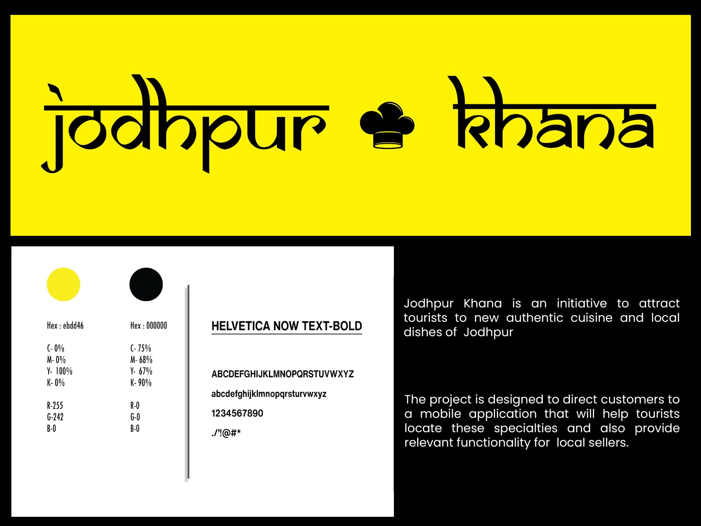
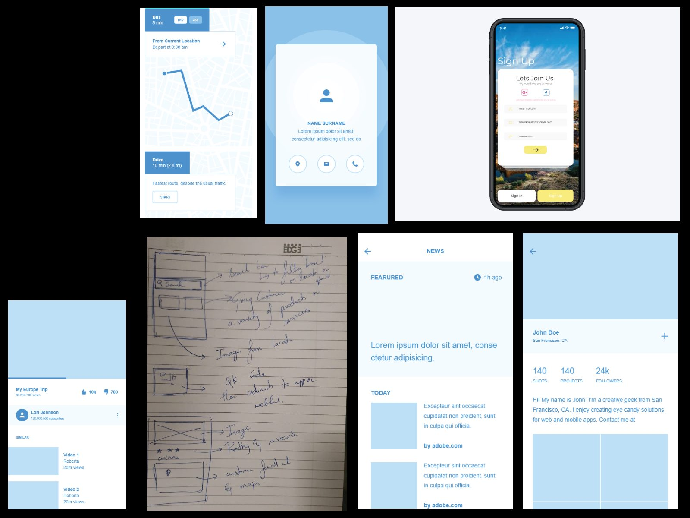
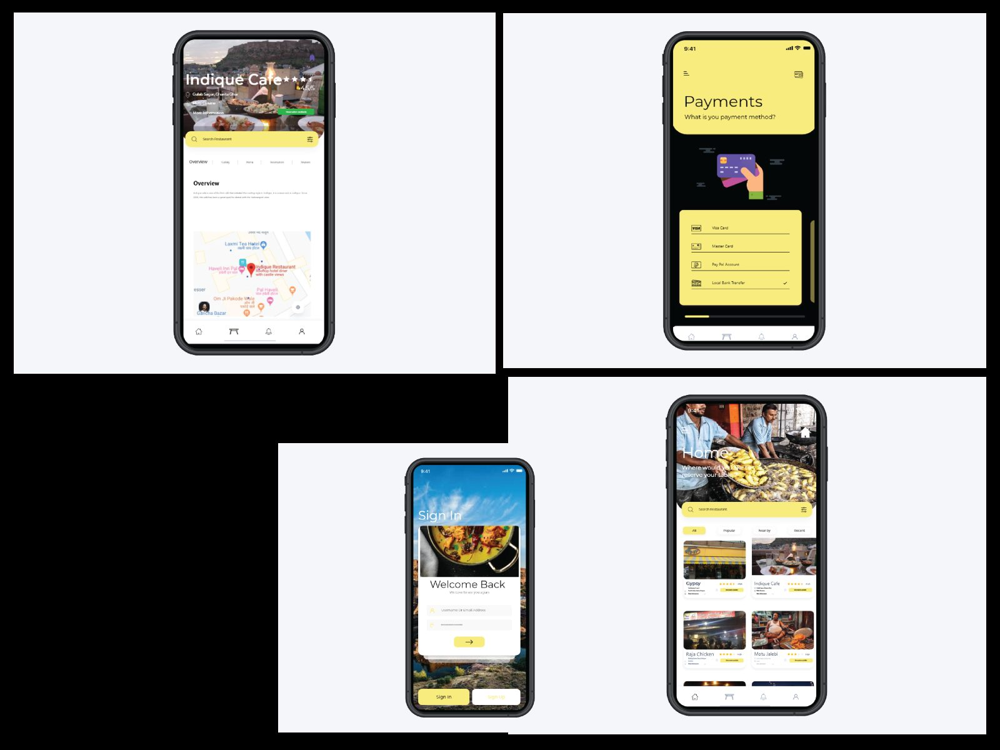
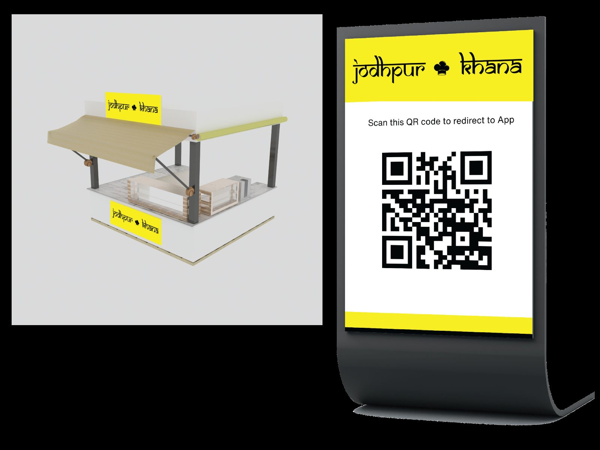
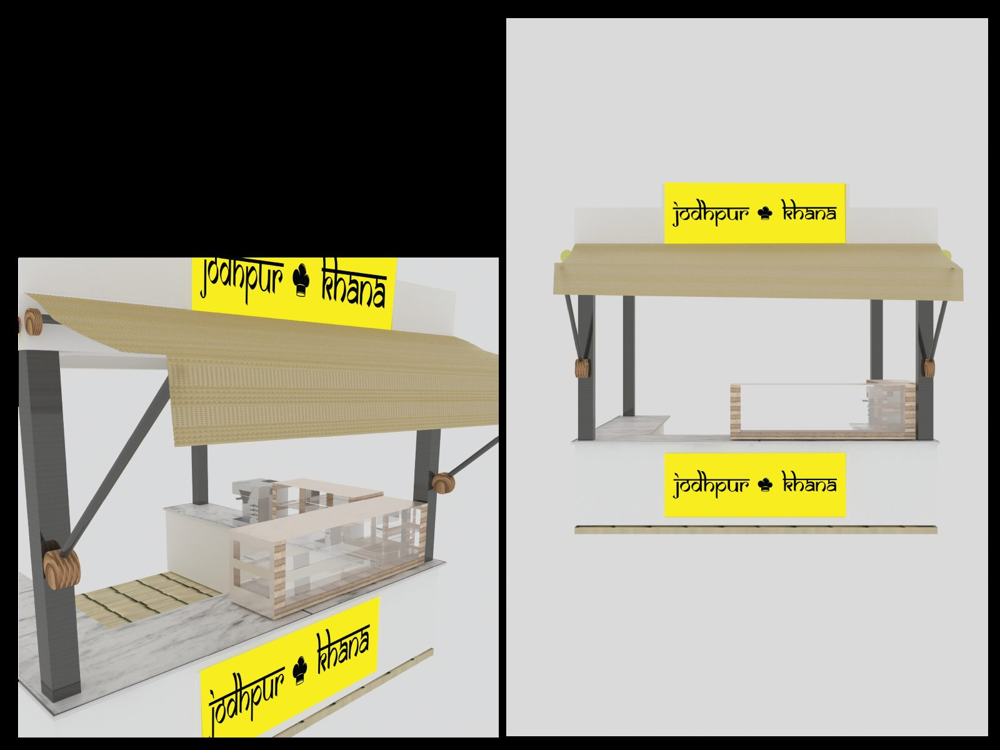

Jodhpur
Khana
Jodhpur Khana is an initiative to attract tourists to new, authentic cuisine and local dishes of Jodhpur — designed to direct customers to a mobile application that helps them locate these specialities, while providing relevant functionality for local sellers.
The vulnerable group here isn't the tourist.
A visitor to Jodhpur can find a restaurant easily enough. What they cannot find is the vendor on a particular street corner who makes one dish better than anyone else — and that vendor has no channel beyond the corner itself.
So the project centres the informal street vendor rather than the tourist: the app gives them discoverability and a way to be paid fairly, and the physical stalls give the initiative a presence on the street that an app alone cannot have.
- IdentityA yellow-and-black mark with a chef's hat joining the two words, set in Helvetica Now Text Bold.
- ApplicationDiscovery, listings, maps and payments, for tourists and sellers alike.
- Pop-up stallA modular cart in 3D, carrying the signage and a QR standee back to the app.
Five spreads, front to back.





The standee is the hinge between the two halves: it carries the mark at street scale and a QR code that redirects to the app, so a tourist who walks past a stall ends up holding the directory.